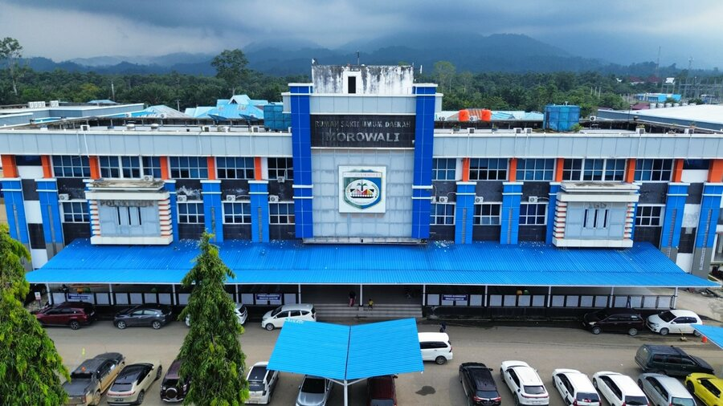
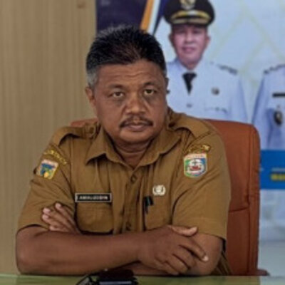
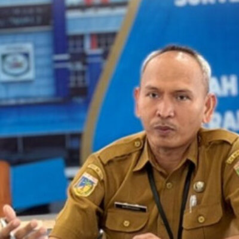

Profil RSUD Morowali
Mengenal RSUD Morowali lebih dekat.
Rumah sakit rujukan daerah untuk masyarakat Kabupaten Morowali
RSUD Morowali adalah rumah sakit milik Pemerintah Kabupaten Morowali, melayani kesehatan dasar hingga rujukan bagi masyarakat Morowali dan sekitarnya.
Dibangun sejak 2003 dan mulai beroperasi tahun 2006, RSUD Morowali diresmikan oleh Gubernur Sulawesi Tengah pada 13 November 2008.
Berstatus BLUD penuh sejak 2014, dengan akreditasi yang terus meningkat hingga meraih Paripurna Bintang 5 dari LAM-KPRS pada 2023.

Profil Singkat
- Jenis
- Rumah Sakit Umum Daerah
- Tipe
- Tipe C
- Akreditasi
- Terakreditasi LAM-KPRS Bintang 5
- Wilayah
- Kabupaten Morowali, Sulawesi Tengah
- Kepemilikan
- Pemerintah Kabupaten Morowali
Arah dan Nilai Kami
Visi
“Mewujudkan pelayanan berkualitas prima yang mandiri dan berkeadilan.”
Misi
- Meningkatkan sistem manajemen rumah sakit.
- Meningkatkan pelayanan keahlian dan kedokteran modern.
- Meningkatkan pelayanan keperawatan komprehensif.
- Mengembangkan kompetensi SDM yang profesional.
- Meningkatkan sarana dan prasarana secara berkesinambungan.
- Mengutamakan pendekatan psikomotor dan disiplin.
- Meningkatkan kesejahteraan.
Nilai-Nilai
- Profesionalisme
- Ramah
- Peduli
- Jujur
- Tanggung Jawab
- Menghargai
Motto
“Melayani dengan Nurani”
Pimpinan RSUD Morowali
Direktur
Maskur, S.Kep., Ns., M.M
Rohayati A. Abd. Kadir, S.K.M.
Kepala Bagian Tata Usaha
dr. Abd. Kadir Hamdan, Sp.An
Kepala Bidang Pelayanan Medik dan Keperawatan

dr. Awaludin
Kepala Bidang Penunjang Medik dan Sarana

Sarifuddin, S.K.M., M.Kes
Kepala Bidang Komunikasi Publik, Informasi dan Rekam Medik
Hubungi RSUD Morowali
-
Alamat
Kompleks Perkantoran Bumi Fonuasingko, Jl. Trans Sulawesi, Bahomohoni, Kec. Bungku Tengah, Kabupaten Morowali, Sulawesi Tengah 94973.
-
Email
-
Jam Layanan Rawat Jalan
Pendaftaran 08.00–11.00 WITA, pelayanan poliklinik 08.00–14.00 WITA (lewat loket/APM).
-
Jam Besuk / Berkunjung
10.00–12.00 WITA dan 17.00–19.00 WITA.
-
Pengaduan & Saran